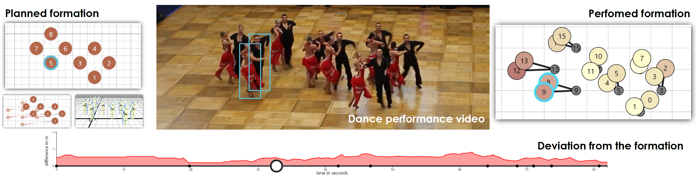

ChoreoVis: Planning and Assessing Formations in Dance Choreographies


Authors. Samuel Beck, Nina Doerr, Kuno Kurzhals, Alexander Riedlinger, Fabian Schmierer, Michael Sedlmair, Steffen Koch
Venue. EuroVis (2024) Full Paper
Type. Full Paper
Abstract. Sports visualization has developed into an active research field over the last decades. Many approaches focus on analyzing movement data recorded from unstructured situations, such as soccer. For the analysis of choreographed activities like formation dancing, however, the goal differs, as dancers follow specific formations in coordinated movement trajectories. To date, little work exists on how visual analytics methods can support such choreographed performances. To fill this gap, we introduce a new visual approach for planning and assessing dance choreographies. In terms of planning choreographies, we contribute a web application with interactive authoring tools and views for the dancers' positions and orientations, movement trajectories, poses, dance floor utilization, and movement distances. For assessing dancers' real-world movement trajectories, extracted by manual bounding box annotations, we developed a timeline showing aggregated trajectory deviations and a dance floor view for detailed trajectory comparison. Our approach was developed and evaluated in collaboration with dance instructors, showing that introducing visual analytics into this domain promises improvements in training efficiency for the future.